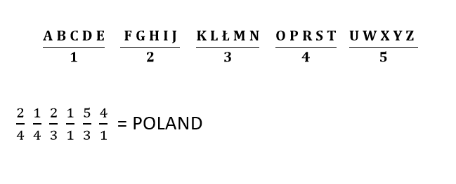

Strona głowna
Alfabet Morse’a
Czekoladka
Gaderypoluki
Zamiana
Ułamkowy
Litery szyfrujemy zapisując je w postaci ułamków.

Aby zaszyfrować jakąś literę, należy ją odnaleźć w jednym z ułamków i zapisać jej miejsce położenia. Przykładowo; "A" oznaczymy jako 1/1, a "C" w postaci 3/1.